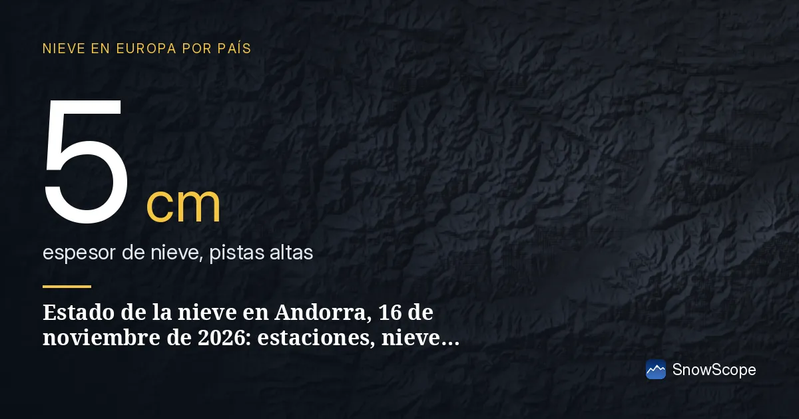

Andorra 2 %, Francia 11 %: división de nieve en la cresta
Andorra y Francia muestran un contraste marcado en la cobertura de nieve inicial el 16 de noviembre: 2 % para Andorra, 11 % para Francia. La división refleja cómo los Pirineos del sur capturan menos humedad otoñal que los Alpes del norte; Andorra debe esperar a los sistemas de diciembre para construir una base.
Consulta la previsión de nieve en tiempo real de Pal-Arinsal en la app SnowScopeEspesor de nieve, alertas de nieve polvo y mapa 3D, gratis.
Por qué Andorra está tan seca ahora
A mediados de noviembre, Andorra normalmente tiene nieve fina solo en alturas elevadas. Los Pirineos aquí capturan menos humedad otoñal que las regiones al norte. Los Alpes de Francia, que se sitúan más al norte y más altos en promedio, interceptan más sistemas atlánticos. Por eso Les Arcs ya tiene 94 cm mientras nuestros mejores sitios tienen 5 cm. Trabajando en montañas secas como estas—en el borde del cinturón de humedad principal—veo este patrón a menudo. La nieve llegará a Andorra, pero no aún. Diciembre es cuando comienza la acumulación real.
| Country | White | Deepest resort | Next 7 days |
|---|---|---|---|
| Andorra | 2 % | Pal-Arinsal | 7 cm |
| España | 0 % | Aramón Cerler | 4 cm |
| Francia | 11 % | Les Arcs | 105 cm |

España y Francia: el panorama general
España está aún más seca que Andorra: 0 % de cobertura blanca, con Aramón Cerler en solo 17 cm. Francia es la líder. Les Arcs tiene 94 cm y podría ver 105 cm la próxima semana si los pronósticos se cumplen. Este aumento está impulsado por sistemas de baja presión profunda que se mueven desde el Atlántico. Andorra captará algo de esa humedad, pero el efecto sombra significa que siempre nos quedamos atrás. La diferencia debería estrecharse para Navidad si los sistemas llegan según lo programado. Por ahora, Francia está en una estación diferente.
Dónde se agarra la nieve en Andorra
Pal-Arinsal lidera con 5 cm de profundidad y 5 cm de nieve nueva en 72 horas. Ordino-Arcalis también muestra 5 cm de profundidad, con 4 cm de nieve nueva, y alcanza 2626 m. Por debajo de 2000 m, nada en el modelo. La banda de 2000-2500 m lleva 1 % de cobertura. Por encima de 2500 m, el 9 % del terreno está blanco—parches finos, principalmente roca desnuda visible. Esta no es nieve esquiable. Es un indicador: la humedad está llegando, pero escasamente y en altura. Si te vas fuera de pista ahora, entiende que estás caminando sobre terreno desnudo con parches firmes dispersos en depresiones protegidas.
Lo que traerá la próxima semana
Se pronostica que nieve fresca llegue el 18 de noviembre. El 19 parece ser el día más nevado, con 5 cm posibles. En los próximos tres días, podrían caer 5 cm; en siete días, 7 cm es posible. Aún delgado, pero la tendencia es ascendente. La semana siguiente (24-30 de noviembre) muestra potencial real en los modelos: 21 cm posibles. Si esos pronósticos se cumplen, Andorra entra en diciembre con una base utilizable. Francia se mantendrá adelante, pero la diferencia se reducirá.
Qué rápido se derritió
Hace siete días, 90 km² de Andorra llevaban nieve. Hoy, 10 km². Una pérdida de 80 km² en una semana muestra la fragilidad del inicio de temporada. Los días cálidos por encima de 2000 m se han comido la mayoría. Esto es típico de montañas secas en otoño: cae la nieve, luego desaparece hasta que el ángulo solar baja a finales de noviembre.
Nieve por altitud
Por debajo de 1500 m: terreno desnudo. 1500-2000 m: nada. 2000-2500 m: 1 % de cobertura. Por encima de 2500 m: 9 % blanco. Este patrón estratificado es típico. Las cimas altas conservan la nieve inicial; los valles permanecen secos. Con el avance de noviembre y la llegada de sistemas de presión, ese umbral descenderá. A mediados de diciembre, si llega la nieve pronosticada, la línea de 2000 m podría llevar una base utilizable. Por ahora, las montañas están divididas: blanco arriba, desnudo abajo.
Consejos para esquiadores
- Si subes a más de 2500 m en los próximos dos días, sondea cuidadosamente la nieve oculta bajo pedregal y hierba; los parches de inicio de temporada son firmes y fáciles de no detectar al pisar.
- El sistema del 18-19 de noviembre merece seguimiento. Si entrega los 5 cm pronosticados, el terreno en altura podría volverse más estable la semana siguiente.
- Consulta el pronóstico oficial de avalanchas antes de cualquier trabajo fuera de pista; la nieve fina en pendientes pronunciadas se adhiere débilmente a la roca.
- La nieve profunda aparece primero en Francia (Les Arcs con 94 cm); Andorra debería recuperarse hacia finales de noviembre si los pronósticos se cumplen.
- El pronóstico del 24-30 de noviembre prevé 21 cm—un sistema más profundo que podría transformar principios de diciembre. Si falla, la temporada comenzará tarde.
Sobre estas cifras
Los espesores de nieve de las estaciones son la nieve más profunda en las pistas altas según el modelo de nieve de SnowScope (unos 1 km, cálculo del 16 de noviembre); son estimaciones para una zona, no una medida en un punto. Los valores de las estaciones de medida son medidas en la fecha indicada. Las previsiones pueden cambiar. Consulta siempre el boletín oficial de aludes antes de salir fuera de pista.
Citar este informe
Para investigación, docencia o prensa: cifras y gráficos reutilizables libremente bajo CC BY 4.0 con esta cita.
SnowScope (2026), Andorra 2 %, Francia 11 %: división de nieve en la cresta, https://snowscope.app/blog/es/2026/11/andorra-snow-report-16-november-2026.html, consultado el 2026-11-16
SnowScope (Atlas Labs). (2026, November 16). Andorra 2 %, Francia 11 %: división de nieve en la cresta. SnowScope snow reports. https://snowscope.app/blog/es/2026/11/andorra-snow-report-16-november-2026.html
BibTeX
@misc{snowscope2026andorrasnowreport16novem,
author = {{SnowScope (Atlas Labs)}},
title = {Andorra 2 %, Francia 11 %: división de nieve en la cresta},
year = {2026},
month = nov,
howpublished = {\url{https://snowscope.app/blog/es/2026/11/andorra-snow-report-16-november-2026.html}},
note = {Published 2026-11-16 20:42 UTC; accessed 2026-11-16}
}· CC BY 4.0 · Métodos, datos y herramientas →
Pal-Arinsal: nieve y temperatura según la altura, este invierno vs el pasado (herramientas) →
Sigue Pal-Arinsal
Gratis: un aviso cuando llega la nieve y la previsión cada mañana.